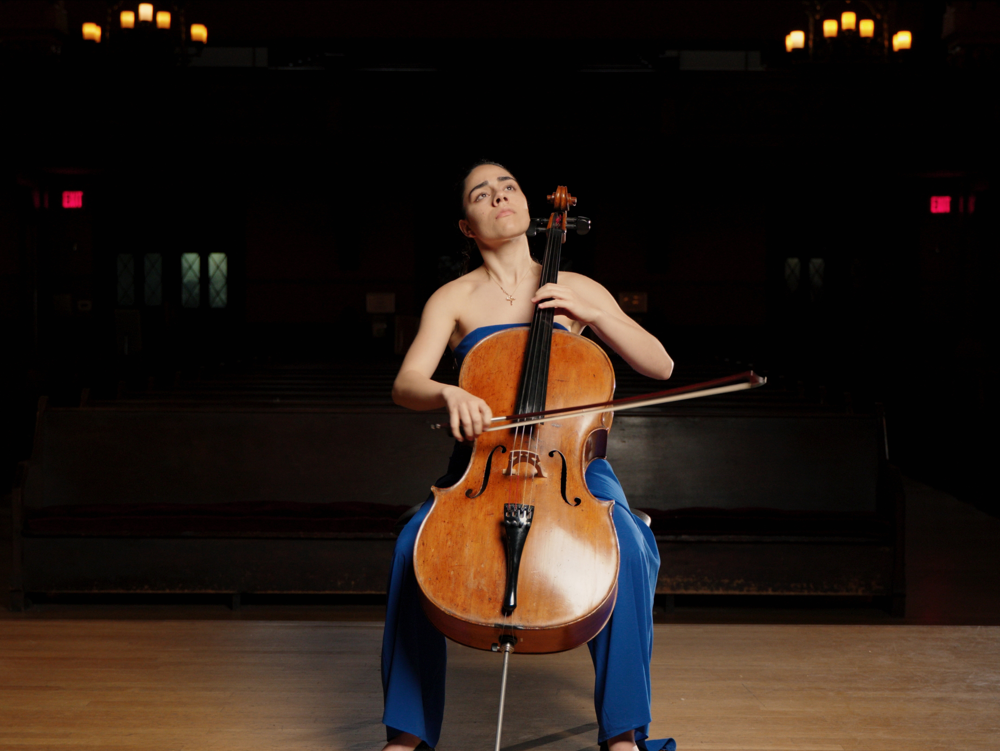

Laura Navasardian
Cellist
LAURA
NAVASARDIAN
Scroll
01 — The Artist
Sculpting time
Sculpting time
through silence.
Laura Navasardian reimagines the classical canon through a lens of modernist austerity and romantic depth. Performing on a 1732 Montagnana, she brings a guttural resonance to stages from Berlin to New York.
Read Biography
"A phenomenon of rare intensity."
NY TimesAgenda
Season 24/25
NOV 12, 2024
Vienna Musikverein
Dvořák Cello Concerto
DEC 05, 2024
Wigmore Hall
Solo Recital: Bach Suites
04 — Repertoire
Concertos
- Elgar — E Minor
- Dvořák — B Minor
- Shostakovich — No. 1
Sonatas
- Beethoven — No. 3 in A
- Brahms — No. 1 in E min
- Debussy — D Minor
05 — Media

"A MUSICIAN OF RARE DEPTH." — THE NEW YORK TIMES
"SCULPTING TIME." — LE MONDE